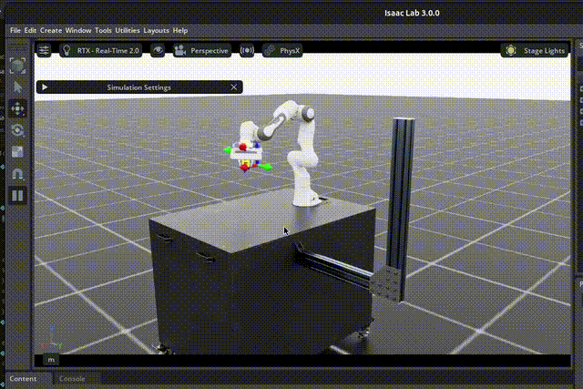

Policy Training#
Docker Container: Base (see Installation for more details)
./docker/run_docker.sh
Training Command#
Training uses IsaacLab’s RSL-RL training script directly. The --external_callback argument
points to an Arena function that runs before training starts — it reads the --task argument,
builds the environment, and registers it with gym so IsaacLab’s script can find it by name.
python submodules/IsaacLab/scripts/reinforcement_learning/rsl_rl/train.py \
--external_callback isaaclab_arena.environments.isaaclab_interop.environment_registration_callback \
--task lift_object \
--rl_training_mode \
--num_envs 4096 \
--max_iterations 2000
Tip
Add --viz kit to open the GUI and watch training live.
Checkpoints are written to logs/rsl_rl/generic_experiment/<timestamp>/.
The agent configuration is saved alongside as params/agent.yaml,
which the evaluation script uses to reconstruct the policy at inference time.
Overriding Hyperparameters#
Hyperparameters come from RLPolicyCfg in isaaclab_arena_examples/policy/base_rsl_rl_policy.py
and can be overridden with Hydra syntax appended to the training command:
# Change network activation function to relu (default: elu)
agent.policy.activation=relu
# Adjust the learning rate (default: 0.0001)
agent.algorithm.learning_rate=0.001
# Save a checkpoint more frequently (default: every 200 iterations)
agent.save_interval=500
For example, to train with relu activation and a higher learning rate:
python submodules/IsaacLab/scripts/reinforcement_learning/rsl_rl/train.py \
--external_callback isaaclab_arena.environments.isaaclab_interop.environment_registration_callback \
--task lift_object \
--rl_training_mode \
--num_envs 4096 \
--max_iterations 2000 \
agent.policy.activation=relu \
agent.algorithm.learning_rate=0.001
Resuming from a Checkpoint#
To resume training from a previously saved checkpoint, use the --resume flag
together with --load_run (run folder name) and --checkpoint (model filename).
Both arguments are optional — when omitted, the most recent run and latest checkpoint
are used automatically.
python submodules/IsaacLab/scripts/reinforcement_learning/rsl_rl/train.py \
--external_callback isaaclab_arena.environments.isaaclab_interop.environment_registration_callback \
--task lift_object \
--rl_training_mode \
--num_envs 4096 \
--max_iterations 4000 \
--resume \
--load_run <timestamp> \
--checkpoint model_1999.pt
Replace <timestamp> with the run folder name under logs/rsl_rl/generic_experiment/.
If --load_run is omitted, the latest run is selected. If --checkpoint is omitted,
the latest checkpoint in that run is loaded.
Monitoring Training#
Launch Tensorboard to monitor progress:
python -m tensorboard.main --logdir logs/rsl_rl
During training, each iteration prints a summary to the console:
Learning iteration 2000/12000
Computation: 308 steps/s (collection: 4.600s, learning 0.377s)
Mean action noise std: 1.00
Mean value_function loss: 0.0273
Mean surrogate loss: -0.0138
Mean entropy loss: 9.9339
Mean reward: 0.65
Mean episode length: 12.00
Episode_Reward/action_rate: -0.0000
Episode_Reward/joint_vel: -0.0001
Episode_Reward/reaching_object: 0.0000
Episode_Reward/lifting_object: 0.1050
Episode_Reward/object_goal_tracking: 0.0223
Episode_Reward/object_goal_tracking_fine_grained: 0.0000
Metrics/object_pose/position_error: 0.5721
Metrics/object_pose/orientation_error: 2.2834
Episode_Termination/time_out: 0.0423
Episode_Termination/object_dropped: 0.0000
Episode_Termination/success: 0.0000
================================================================================
Total timesteps: 1536
Iteration time: 4.98s
Time elapsed: 00:00:04
ETA: 00:00:49
Multi-GPU Training#
Add --distributed to spread environments across all available GPUs:
python submodules/IsaacLab/scripts/reinforcement_learning/rsl_rl/train.py \
--external_callback isaaclab_arena.environments.isaaclab_interop.environment_registration_callback \
--task lift_object \
--rl_training_mode \
--num_envs 4096 \
--max_iterations 2000 \
--distributed
Expected Results#
After 2,000 iterations (~40 minutes on a single GPU with 4096 environments), the trained policy should reliably grasp and lift objects to commanded target positions.
{kind=link}

Note
Training performance depends on hardware, environment configuration, and random seed. For best results, use a powerful GPU (e.g., RTX 4090, A100, L40).